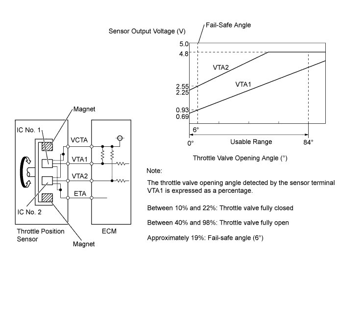
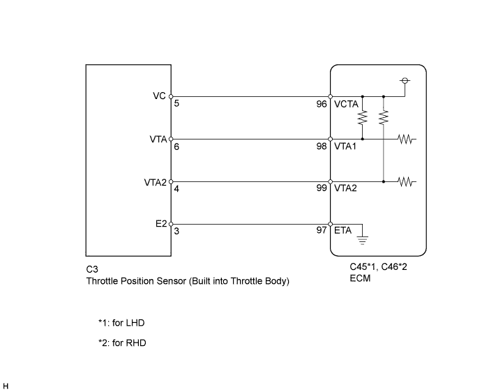
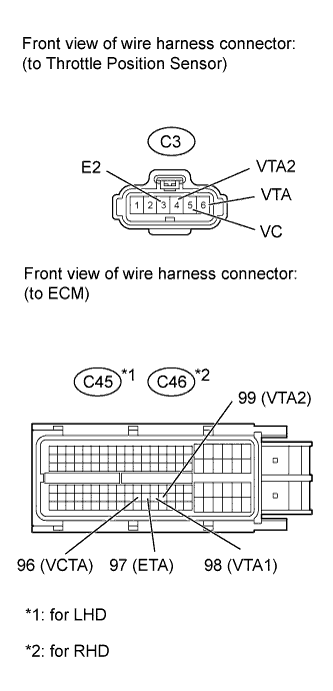
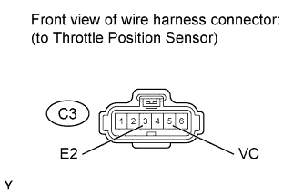

DTC P0120 Throttle / Pedal Position Sensor / Switch "A" Circuit Malfunction |
DTC P0122 Throttle / Pedal Position Sensor / Switch "A" Circuit Low Input |
DTC P0123 Throttle / Pedal Position Sensor / Switch "A" Circuit High Input |
DTC P0220 Throttle / Pedal Position Sensor / Switch "B" Circuit |
DTC P0222 Throttle / Pedal Position Sensor / Switch "B" Circuit Low Input |
DTC P0223 Throttle / Pedal Position Sensor / Switch "B" Circuit High Input |
DTC P2135 Throttle / Pedal Position Sensor / Switch "A" / "B" Voltage Correlation |

| DTC Code | DTC Detection Condition | Trouble Area |
| P0120 | The output voltage of VTA1 quickly fluctuates beyond the lower and upper malfunction thresholds for 2 seconds when the accelerator pedal is depressed (1 trip detection logic). |
|
| P0122 | The output voltage of VTA1 is 0.2 V or less for 2 seconds when the accelerator pedal is depressed (1 trip detection logic). |
|
| P0123 | The output voltage of VTA1 is 4.535 V or higher for 2 seconds when the accelerator pedal is depressed (1 trip detection logic). |
|
| P0220 | The output voltage of VTA2 quickly fluctuates beyond the lower and upper malfunction thresholds for 2 seconds when the accelerator pedal is depressed (1 trip detection logic). |
|
| P0222 | The output voltage of VTA2 is 1.75 V or less for 2 seconds when the accelerator pedal is depressed (1 trip detection logic). |
|
| P0223 | The output voltage of VTA2 is 4.8 V or higher, and VTA1 is between 0.2 V and 2.02 V for 2 seconds when the accelerator pedal is depressed (1 trip detection logic). |
|
| P2135 | Either condition (a) or (b) is met (1 trip detection logic): (a) The difference between the output voltages of VTA1 and VTA2 is 0.02 V or less for 0.5 seconds or more. (b) The output voltage of VTA1 is 0.2 V or less and VTA2 is 1.75 V or less for 0.4 seconds or more. |
|
| Tester Display | Accelerator Pedal Fully Released | Accelerator Pedal Fully Depressed |
| Throttle Position No.1 | 0.5 to 1.1 V | 3.3 to 4.9 V |
| Throttle Position No.2 | 2.1 to 3.1 V | 4.6 to 5.0 V |

| 1.READ VALUE USING INTELLIGENT TESTER (THROTTLE POSITION SENSOR) |
Connect the intelligent tester to the DLC3.
Turn the engine switch on (IG) and turn the tester on.
Enter the following menus: Powertrain / Engine and ECT / Data List / ETCS / Throttle Position No.1 and Throttle Position No.2.
Check the values displayed on the tester.
| Throttle Position No.1 | Throttle Position No.2 | Throttle Position No.1 | Throttle Position No.2 | Trouble Area Proceed to | |
| When Accelerator Pedal Released | When Accelerator Pedal Depressed | ||||
| 0 to 0.2 V | 0 to 0.2 V | 0 to 0.2 V | 0 to 0.2 V | VC circuit open | A |
| 4.5 to 5.0 V | 4.5 to 5.0 V | 4.5 to 5.0 V | 4.5 to 5.0 V | E2 circuit open | |
| 0 to 0.2 V, or 4.5 to 5.0 V | 2.1 to 3.1 V (Fail-safe) | 0 to 0.2 V, or 4.5 to 5.0 V | 2.1 to 3.1 V (Fail-safe) | VTA1 circuit open or ground short | |
| 0.5 to 1.1 V (Fail-safe) | 0 to 0.2 V, or 4.5 to 5.0 V | 0.5 to 1.1 V (Fail-safe) | 0 to 0.2 V, or 4.5 to 5.0 V | VTA2 circuit open or ground short | |
| 0.5 to 1.1 V | 2.1 to 3.1 V | 3.2 to 4.8 V (Not fail-safe) | 4.5 to 5.0 V (Not fail-safe) | TP sensor circuit normal | B |
|
| ||||
| A | |
| 2.CHECK HARNESS AND CONNECTOR (THROTTLE POSITION SENSOR - ECM) |
 |
Disconnect the throttle body connector.
Disconnect the ECM connector.
Measure the resistance according to the value(s) in the table below.
| Tester Connection | Condition | Specified Condition |
| C3-5 (VC) - C45-96 (VCTA) | Always | Below 1 Ω |
| C3-6 (VTA) - C45-98 (VTA1) | Always | Below 1 Ω |
| C3-4 (VTA2) - C45-99 (VTA2) | Always | Below 1 Ω |
| C3-3 (E2) - C45-97 (ETA) | Always | Below 1 Ω |
| Tester Connection | Condition | Specified Condition |
| C3-5 (VC) - C46-96 (VCTA) | Always | Below 1 Ω |
| C3-6 (VTA) - C46-98 (VTA1) | Always | Below 1 Ω |
| C3-4 (VTA2) - C46-99 (VTA2) | Always | Below 1 Ω |
| C3-3 (E2) - C46-97 (ETA) | Always | Below 1 Ω |
| Tester Connection | Condition | Specified Condition |
| C3-5 (VC) or C45-96 (VCTA) - Body ground | Always | 10 kΩ or higher |
| C3-6 (VTA) or C45-98 (VTA1) - Body ground | Always | 10 kΩ or higher |
| C3-4 (VTA2) or C45-99 (VTA2) - Body ground | Always | 10 kΩ or higher |
| Tester Connection | Condition | Specified Condition |
| C3-5 (VC) or C46-96 (VCTA) - Body ground | Always | 10 kΩ or higher |
| C3-6 (VTA) or C46-98 (VTA1) - Body ground | Always | 10 kΩ or higher |
| C3-4 (VTA2) or C46-99 (VTA2) - Body ground | Always | 10 kΩ or higher |
|
| ||||
| OK | |
| 3.INSPECT ECM (VC VOLTAGE) |
 |
Measure the voltage according to the value(s) in the table below.
| Tester Connection | Switch Condition | Specified Condition |
| C3-5 (VC) - C3-3 (E2) | Engine switch on (IG) | 4.5 to 5.5 V |
|
| ||||
| OK | |
| 4.REPLACE THROTTLE BODY ASSEMBLY |
Replace the throttle body assembly (Click here).
| NEXT | |
| 5.CHECK WHETHER DTC OUTPUT RECURS (THROTTLE POSITION SENSOR DTCS) |
Connect the intelligent tester to the DLC3.
Turn the engine switch on (IG) and turn the tester on.
Clear the DTCs (Click here).
Start the engine.
Allow the engine to idle for 15 seconds or more.
Enter the following menus: Powertrain / Engine and ECT / DTC.
Read the DTCs.
| Result | Proceed to |
| P0120, P0122, P0123, P0220, P0222, P0223 and/or P2135 | A |
| No output | B |
|
| ||||
| A | ||
| ||